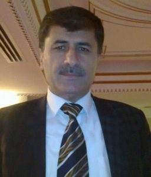

Sedat Doğan
1 Ocak 1962 tarihinde Mardin (Mêrdîn) ili Mazıdağı (Şemrex) ilçesi Arısu (Gola Gûlê) Köyünde doğdu.
İlkokulu köyünde, Ortaokulu Mazıdağı’nda bitirir. Liseye Ankara Gülveren Lisesi’nde başlar, İstanbul Pertevniyal Lisesi’nden 1985 yılında mezun olur. İlk makalesi 1984 yılında Millî Gazete’de yayınlanır. 1986-87 yılında Mardin/ Mazıdağı ilçesi köylerinde bir yıl vekil öğretmenlik yapar. Bu arada önce Eskişehir Anadolu Üniversitesi Açık öğretim Fakültesi’ni, sonra 1988 yılında İstanbul Marmara Üniversitesi İlahiyat Fakültesi’ni kazanır.
1989 yılında İstanbul’da Maliye memuru olarak göreve başlar. 1990’da askerlik için “ücretsiz izinle” görevinden ayrılır. Sonuç: “İstifa etmiş” sayılır! Resmî memuriyete bir daha dönemez. Kasım 1991 – Şubat 1993 arasında askerliği vukuatsız olarak biter. Çünkü 2 çocuk babası olarak askerlik yapıyorken ebeveyni, kardeşleri, eşi ve çocuklarının yaşadığı köy ve ev iki defa ölümcül saldırıya uğruyor. Allah’tan, bir can kaybı yaşanmıyor.
Köyünün hiçbir örgüt ve terör ile bağları yok. Üstelik korucu falan da değiller. Sonuç: Köy terör yüzünden dağılıyor, 1993. Tezkereden hemen sonra, ailenin şehirde yaşamış, derdini iyi bir Türkçe ile anlatabilecek tek ferdi olarak ebeveyni, kardeşleri, eşi ve çocukları dâhil 15 kişilik ailesi ile can güvenliği için Çukurova’ya, Osmaniye (Cebel-i Bereket)’ye sığınır. Ailenin bütünlüğünü korumak ve geçimini sağlamak adına bir süreliğine Kariyer yapmak ve sosyal aktivitelerle ilgilenmek gibi uğraşlardan kopar. Eğitimine rağmen beden işçiliği yapmak zorunda kalır. Çiftçilik, kum satıcılığı ve nakliye işleri yapar. Mersin, Antalya, İzmir, Muğla ormanlarında, naylon çadırlarda kömür işçiliği yapar.
Ekonomi biraz elverince Osmaniye’de bir reklâm ajansı kurar. Sonra kitap – kırtasiye dükkânı açar. İşleri tam düzelmişken, ekonomik bir kriz çıkar. Ve ticareti artık tamamen bırakır. Köye dönüşlere 11 yıl sonra izin çıkınca, ailesi köylerine geri döner. O da 2004 yılında bölgenin terör kaynaklı bütün köy boşalmaları mağdurlarının sığındığı bir varoş olan Diyarbekir şehrinin Bağlar Semtine yerleşir. Diyarbakır’a yerleştikten sonra Özel Sektörde Muhasebeci, Satın almacı ve İdarî Memur olarak yaşam mücadelesini sürdürür.
01.05.2017 tarihi itibariyle artık bir emeklidir. Muhtelif dergilerde Şiirleri yayınlanır ve ödül alır. Yazı ve Şiirlerinde en çok toplumsal sıkıntıları işler. Ölüm, hüzün, sevgi, aşk, özgürlük, gurbet, terör, göç, cehalet ve yoksulluk gibi kavramlar, yazı ve şiirlerinin başlıca imgeleridir. Haber Diyarbakır, Ufkumuz, Hür Bakış, Siverek Name, Teletex, News 24, Sen de Yaz, Edebiyat Dostları ve Haber Azad sitelerinde ve bazı yerel gazetelerde yazarlık yapar.
Kendini “Kürtçe yazamayan ancak Türkçe yazıp Kürtçe de konuşup düşünebilen Müslüman bir şair – yazar” olarak tanımlıyor.Çünkü Türkçe’yi hiç bilmediği günlerini çok net hatırlıyor.
Bir insan hakları savunucusu olarak, insan hak ve hürriyeti için verilen mücadelelere katkılar yapmaya devam eder. Öncellikle bütün insanların, ardından Kürtlerin temel haklarını meşrû zeminde savunan sivil ve legal çalışmalarda yer alır.
2004 –2017 yılları arasında İnsan Hakları ve Mazlumlar İçin Dayanışma Derneği (MAZLUMDER)’in Diyarbakır şube yönetiminde görev yapar. 2012 yılında kurulan Hak, Adalet ve Hürriyet İçin Kürdistan İslamî İnisiyatifi (Azadî İnisiyatifi)’nin kurucularındandır.2018 yılında kurulan İnsan ve Özgürlük Partisi’nin kurucularındandır. Yeni kurulan Kürt Dil Platformu’nun üyesidir. Evli ve (3’ü vefat etmiş, 3’ü yaşayan) 6 çocuk babasıdır.